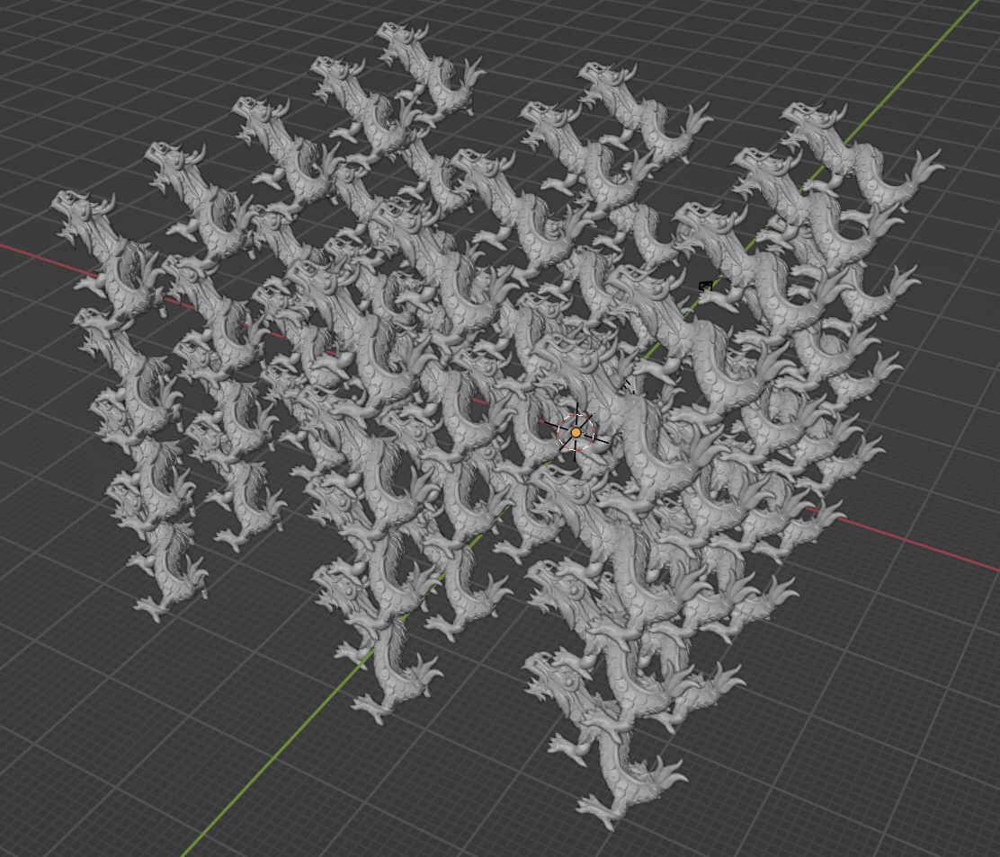

In summary, I build my Vulkan renderer with 4 major components:
Viewer Application -- the Vulkan app that render the scene and has access to multiple controllers.
Controllers -- each individual controller manages different sub-tasks. For example, camera controller manages camera storage, switch, transformation, and movement. Animation controller manages driver storage, animating, pause, resume and restart of animation. Window controller handles window creation and resize. Input controller handles user key and mouse input. Events controller handles event parsing and accessing.
Scene object instances -- when parsing the scene.s72 file, scene object instances such as Transform, Camera, Mesh, Driver are created using shared_ptr. The scene graph is saved as a list of Mesh and their immediate Transform. They are passed into Viewer Application for rendering. The app can compute the Mesh's transform in world space using Transform's localToWorld function
Math and utils -- math library such as vec, mat and qua and utils library such as arg parser, Json parser are created to help with code reuse
My Animation A1-create
My animation shows a ping pong game in the pingpong.s72 scene. The ping pong ball is tossed into air. The red ping pong bat hit the ball diagonally across the table to the opponent's side. the blue ping pong bat catch the ball and hit it back. The scene also includes a ping pong table and a plane.
I created my animation using Blender. The ping pong table is made of 2 cubes (surface and net) and 4 cyclinders (legs). The ping pong bats are made of 2 cyclinders.
I created the animation by inserting keyframes for the location and rotation of ping pong bats and the location of the ball.
I painted vertex color for the ping pong bats, ball and table by first creating a color attribute for each of the objects and using vertex paint mode in texture paint window to paint vertex color.
I painted vertex color using keyboard shortcut: first select the mesh to paint, then Ctrl-Tab-8 to select vertex paint, A to select all faces, and Ctrl-X to paint color.
To view the vertex color in normal mode, I added a color attribute node to the material and link the color in color attribute and the color in material.
Using the Scene Viewer
To compile the Scene Viewer, run "node Maekfile.js" from the root directory.
The executable is compiled into /bin folder.
To run the Scene Viewer, run the command ./bin/viewer --scene [folder]/scene.s72 ... from the command line. The scene file should be placed in /scene/[folder] directory outside the code's root directory. So the total relative path is "../scene/[folder]/scene.s72".
Command-line Arguments
--scene [folder]/scene.s72 -- required -- load scene from scene.s72 under "/scene/[folder]" directory
--camera camera-name -- not required -- view the scene through the camera named name. If such a camera doesn't exist in the scene, abort
--physical-device device-name -- not required -- use the physical device whose VkPhysicalDeviceProperties::deviceName matches name. If such a device does not exist, abort
--list-physical-devices -- not required -- list all available physics devices
--window-size w h -- not required -- set the initial size of the drawable part of the window in physical pixels. If not specified, use default size 800 450
--culling cull-mode -- not required -- set the culling mode. Available choices are "None" and "Frustum". Default to None
--headless event_file_name -- not required -- enable headless mode. Execute event in events file specified by event_file_name
--animation-no-loop -- not required -- disable animation loop. The animation loops in default setting
--measure -- not required -- print the elapse time between 2 consequtive frames and the total time at the end. User can set the max number of frames they want to measure in constants.h for window mode
Controls
A Rotate camera left
D Rotate camera right
W Rotate camera upward
S Rotate camera downward
Q Move camera forward
E Move camera backward
C Switch camera in order (including cameras in scene and movable user and debug camera)
B Switch to debug camera. The culling test is performed through the previously active camera.
P Pause/resume animation
R Restart animation
LMB+Drag Resize the window by dragging the corner of the window
LMB Close the window by clicking the close button ("x") on the window
LMB Hide the window by clicking the hide button ("-") on the window
My Code
Support Code for Math and Vulkan
Math code
Math code is stored under "src/include/math/" folder.
I implemented vec in "vec.h" using template class vec<T,size> to avoid writing duplicated code. I specifically define vec2, vec3, vec4 of float type for convenience.
The data is stored in template member variable std::array<T, size> data.
It supports various constructors, math calculations and output as string/to stream.
vec() -- create a zero vector
vec(T _x) -- create a vector with all element assigned value _x
vec(T _x, T _y) -- create a 2d vector (use assert to ensure correct size and number of arguments)
vec(T _x, T _y, T _z) -- create a 3d vector
vec(T _x, T _y, T _z, T _w) -- create a 4d vector
vec(vec<T,2> v, T _z), vec(T _x, vec<T,2> v) -- create a 3d vector using 2d vector
vec(vec<T,3> v, T _z), vec(T _x, vec<T,3> v), -- create a 4d vector using 3d vector
vec(std::vector<T> vec) -- create vector using std::vector (use assert to ensure correct size and number of arguments)
operator[](uint32_t idx) -- access individual element
operator+=, operator-=, operator*=, operator/=, operator+, operator-, operator*, operator/ -- add, subtract, multiply, divide with a float or another same sized vector
operator-() -- negate the vector
norm() -- calculate the norm
normalize() -- normalize the vector inplace
normalized() -- return a normalized vector
as_string() -- return the vector as a string
operator<<() -- output the vector as a string to output stream
operator==(vec l, vec r) -- check equality of 2 vector
I implemented mat in "mat.h" as template class mat<T,row_size, col_size>, similarly to reduce duplicated code. I specifically defined mat2, mat3, mat4 of float type for convenience.
The data is stored in std::array<vec<T,row_size>,col_size> data in column major.
It supports various constructors, math calculations and output as string/to stream.
static mat::I -- return an identity matrix
static mat::Zero -- return a zero matrix
mat() -- create a matrix with all value initialized to zero
mat(T s) -- create a matrix with all value initialized to s
mat(const COL_TYPE v1, const COL_TYPE v2, ...) -- create matrix with multiple vec of COL_TYPE
mat(float m00, float m10, float m01, float m11)... -- create 2x2, 3x3, and 4x4 matrix by specifying every element
operator[] -- access individual element of the matrix
add, subtract, multiply, divide with a float or another same sized matrix (elementwise operation)
operator*(const mat<T,m_row_size,m_col_size> m) -- multiply with another matrix
operator*(const vec<T,col_size> v) -- multiply with a vector
as_string() -- return the matrix as a string
operator<<() -- output the matrix as string to output stream
transpose() -- return the transpose of the matrix
I implemented qua in "qua.h" with data stored in vec4.
It supports various constructors, math calculations and quaternion conversion.
qua() -- create a quaternion with all value initialized to zero
qua(const float x, const float y, const float z, const float w) -- create a quaternion by specifying every element
qua(const std::vector v) -- create a quaternion with a std::vector
qua(const vec4& v) -- create a quaternion with a vec4
qua(float x, const vec3 v), qua(const vec3 v, float w) -- create a quaternion with a float and a vec3
operator[] -- access individual element of the quaternion
operator*(float s) -- multiply with a float
operator+(const qua q) -- add another quaternion elementwise
toVec() -- convert the quaternion to a vec4
inv() -- return the inverse of the quaternion
operator*(const qua r) -- perform quaternion multiplication
pitch(), yaw(), roll() -- compute pitch, yaw, roll
toEuler() -- convert quaternion to euler angles
Other helpful math functions are defined in "math_utils.h":
cross(const vec3 l, const vec3 r) -- return the cross product of 2 vec3s
dot(const vec<T,size> l, const vec<T,size> r) -- return the dot product of 2 template vec
vmin(const vec<T,size>& l, const vec<T,size>& r) -- return a vec whose elements are minimum of both (used for bounding box)
vmax(const vec<T,size>& l, const vec<T,size>& r) -- return a vec whose elements are maximum of both (used for bounding box)
degToRad(float deg) -- convert degree to radians
lerp(const vec3 start, const vec3 end, float t /* a fraction of 1*/) -- liner interpolation between 2 vec3s
perspective(const float vfov, const float aspect, const float near, const float far) -- calculate perspective matrix based on vertical field of view, aspect ratio, near and far clipping distance
translationMat(vec3 t) -- prepare a translation matrix
scaleMat(vec3 s) -- prepare a scale matrix
rotationMat(qua r) -- prepare a rotation matrix (from a quaternion)
eulerToQua(vec3 euler) -- convert euler angles to a quaternion
quaLerp(const qua qStart, const qua qEnd, float t) -- linear interpolation between 2 quaternions
slerp(const qua qStart, const qua qEnd, float t) -- spherical linear interpolation between 2 quaternions
angleAxis(const float& angle, const vec3& dir) -- return a quaternion from an angle and a axis
Window controller code
I get a window using glfw following the vulkan tutorial. To enable future replacement of glfw, I refactor the code for window into a WindowController class defined in "src/include/controllers/window_controller.h". This controller handles the creation, resize and deletion of the window.
Vulkan app code
The Vulkan app code is defined in "src/include/viewer.h".
I create a swapchain inside the Viewer Application which is the Vulkan app that manage Vulkan resources and rendering pass. The Viewer app is initialized in main. It will first set up certain configurations passed in from command line arguments such as scene file name, camera, width and height, headless mode, culling, and measure mode. Then the app starts running and creating Vulkan resources and the render pipeline. In mainLoop(), the app recomputes mesh and camera transformation and render the image. In window mode, the app stops when the window is closed. The window controller monitors this event. In headless mode, the app stops when all events are processed. After exiting mainLoop(), the app called cleanUp to destroy all Vulkan resources. The Vulkan resources are currently created and maintained as member of ViewerApplication. I will later refactor the code out to their wrapper class to enable better resource management.
Loading scenes, Mesh data A1-load
My scene loader parses scene.s72 using customized Json parser defined in "src/include/utils/json_parser.h", which is a simplified Json parser that can parse number (as double), string, array (as vector of doubles) and object.
I referenced sejp while implementing the Json parser.
This Json parser stores data in a JsonData object which contains vectors of numbers, strings, arrays and objects.
Each JsonValue has a shared_ptr referencing the JsonData, a value type, and an index to retrieve the actual value from the vector specific for its type.
To retieve information from scene.s72, the Json parser returns a JsonList, a list of shared_ptr of JsonValue.
The scene loader, which is a Scene class defined in "src/include/scene/scene.h" loads each item from the JsonList into scene object instances of type Transform, Mesh, Camera, Driver.
Since the objects may not be recorded in topological order, the scene loader stores a list of references between 2 objects such as a Transform and a Mesh while parsing, and relate them later after creating all scene object instances.
While processing the references, I also create a list of ModelInfo, which contains a shared_ptr to a Mesh and shared_ptr to a Transform. They are the objects to render and their transform.
This list of ModelInfos is later passed into the Vulkan app.
Here's a brief introduction of the scene object instances:
Transform, which is defined in "src/include/scene/transform.h", contains translation(vec3), scale(vec3), rotation(qua) and localToWord() and worldToLocal() functions which will be used to generate model matrix.
Mesh, which is defined in "src/include/scene/mesh.h", contains load information(src, offset, stride), a list of vertices, and a bounding box. When the mesh is created, the vertex attributes will be loaded from b72 file and the bounding box is calculated at the same time.
Camera, which is defined in "src/include/scene/camera.h", contains aspect, vfov, near, far, a shared_ptr to Transform, movable(true for user and debug camera), debug(true for debug camera only), and euler angles (for moving).
Driver, which is defined in "src/include/scene/driver.h", contains channel, a vector of timestamps, a vector for 3d values(translation and scale), a vector for 4d values(rotation), interpolation method, a shared_ptr to Transform, current frame index, current frame time, and whether to loop animation.
Drawing the scene. A1-show
I defined a CameraController to manage the transformations of camera.
In main loop, during each frame, delta time is computed using chrono and passed into camera controller which will check if the camera move keys have been pressed and recompute rotation and translation based on the key pressed and delta time.
In the updateUniformBuffer() function, the viewer app will ask camera controller to recompute projection and view matrix and then update uniform buffer.
The view matrix (transformation) of the camera is calculated using Transform's worldToLocal() function.
The Vulkan app sets up the scene after receiving the scene file information and obtains a list of ModelInfo (containing mesh and transform).
For each model to be rendered, the app creates VkModel with a Vertex Buffer and associated memory, and load the vertices from Mesh into the Vertex Buffer.
In each frame, the app loops through the list of VkModel, recompute the model matrix, load it into a Push Constant and pass to the shader.
Here's the Articulation example scene rendered from the viewer.
Handling interactive camera and debug camera movement. A1-show
I decided to implement rotation and movement for a free-flying camera. To reduce reliance on mouse, the camera can only be moved using keyboard.
The camera can rotate up, down, left and right with W, S, A, D and move forward and backward with Q and E.
Camera controls are implemented in CameraController in "src/include/controllers/camera_controller.h". The rotation is computed using euler angles instead of Quaternion because it is much more simpler to update euler angles.
I added a user camera and a debug camera in addition to cameras included in the scene. When the app is opened, user camera will be used initially. User can switch camera using C key.
User can move user camera and debug camera freely.
When debug camera is switched on, the objects culled by the previously active camera will not be rendered. User can switch from another camera to debug camera using B key.
I printed the current camera to the terminal when switching happends. In the future, I may display the camera name on the window directly.
Frustum culling A1-cull
I implemented Frustum culling in clip space.
For each mesh, I computed its bounding box which contains 2 corners: the min and the max. The bounding box is computed while loading the vertices from the binary file.
To perform culling, I transform each corner of the bounding box into clip space and check whether they are outside the clip space,
i.e. -w < x < w, -w < y < w, 0 < z < w. I also check the situation that the corners of the bounding box all outside the clip space but the object is inside the clip space, for example, a long wall.
In this case, I check whether all corners are outside a particular plane of the clip space. For example, the corners of a long wall must be within the near and far clipping plane when the camera is facing the wall.
The code for Frustum culling test and bounding box is in "src/include/scene/bbox.h".
Here's a screen recording of culling in Articulation scene. The first camera is the user camera. The second camera is the debug camera. When culling is enabled, only the cube and the plane are rendered in the debug camera view.
This is not a perfect culling method. However, it is fast to compute and effective in most cases.
Animating the scene A1-move
The keyframes are stored in a Driver object when the scene is loaded.
Driver contains channel, timestamps, vectors of 3d/4d values, interpolation method, a shared_ptr to Transform, current frame index, current frame time, and whether to loop animation.
It also has functions to restart the animation, set playback time, and animate.
When animate(deltaTime) function is called, the driver updates the frame time by adding delta time. It then increments the frame index if current frame time is greater than the timestamp of the next key frame.
The transform is then updated using different interpolation functions given the specified interpolation method.
The code for Driver is in "src/include/scene/driver.h".
I defined a AnimationController in "src/include/controllers/animation_controller.h" which manages all the Driver objects and drives animation for each frame. It pauses or resumes animation if P key is pressed. It restarts the animation if R key is pressed. It can also set animation play back time (used in headless mode).
The elapsed time is computed in the main loop of vulkan app using chrono. The app keeps track of the time of the previous frame. In the current frame, it calculates the elapsed time between the current time and the time of the last frame.
Handling headless mode A1-hide
I implemented headless mode using VK_EXT_headless_surface, thanks to the post by David.
In headless mode, the glfw window will not be created. Instead, a VkHeadlessSurface is created. We have to explicitly add VK_KHR_SURFACE_EXTENSION_NAME to the list of required extensions to make the code work.
I defined a EventController in "src/include/controllers/event_controller.h", which parses the events file, creates a list of Events and retrieves next event.
In the main loop, the Vulkan app gets the next event from the event controller if it has not ran out of events and executes each event. It calculates the time elapsed between 2 events to update animation.
For AVAILABLE event, it draws the next frame.
For SAVE event, I referenced the vulkan example by Sascha Willems and implemented a sceenshot function. This screenshotSwapChain function acquires the most-recently-rendered image in the swap chain, transfers its image layout, saves it to a local ppm file, and then transfers it back to present layout.
Sascha Willems' git repo is a great source for learning Vulkan. It also teaches me how to reorganize and refactor Vulkan code. I'll refactor my Vulkan code based on his example later when I have time.
Here's a thing to note: for drawing frame in headless mode, vkQueuePresentKHR will not return VK_SUCCESS. But it needs to present the image to prompt the swap chain to get next image. Hence, I skipped the checking of vkQueuePresentKHR result in headless mode.
Performance improvements A1x-fast
I worked on one performance improvement measure: the index buffer.
I transform the loaded meshes into indexed meshes. This is done by hashing vertices into a hash set based on their position (x,y,z coordinates), resize the vertices list and assign vertex back to the list based on thier position.
I implemented a custom hashing/comparison struct for the hash map to compare Vertex.
The function to calculate indices, calculateIndices, is implemented in "src/include/scene/mesh.h". If enabled, the indices will be calculated directly after the vertices are loaded from binary files.
In the Vulkan app, an index buffer will be created alongside the index bufffer for each model to be rendered. The indices will be copied into the index buffer. During rendering, vkCmdDrawIndexed will be called instead of vkCmdDraw.
Performance Tests
Rlevant information about your testing system:
CPU: 10-core
GPU: 16-core
Memory: 16 GB
OS version: Mac OS 13.0.1 (22A400)
Culling
The culling mode improves performace when the number of vertices is huge and there are many meshes that can be culled from camera view. In this culling_test.s72 scene, there are 90 spheres and 259200 vertices in total. The camera in the scene rotates from left to right and scans over the spheres.
Here's the scene.
Here's the camera view.
It is observed that only a few spheres show up in the camera view. Hence, culling can avoid shading the large number of spheres outside the camera view frustum.
Indeed, when culling mode is enabled, the average rendering time for 120 frames reduced from 0.12180s to 0.03297s, i.e. frame rate increases from about 985 fps to 3640 fps.
However, the culling mode makes the performance worse in Articulation scene when viewing from the Arm-Camera, an animated Camera. This is probably because the meshes included in the scene have fewer vertices. Compute culling test is expensive on the CPU.
Here's a screen recording of culling in the view of Arm-Camera in Articulation scene.
The average rendering time increases from 0.02916s to 0.03009s with culling, i.e. frame rate decreases from 4114 fps to 3988 fps. Since the difference is tiny, and the performance varies at different time because CPU may be occupied by other processes, I conclude that frustum culling has limited effect on the performance when the number of vertices are small.
Bottlenecks
For the bottleneck analysis below, I rendered each test scene in headless mode with a events file documenting events for 10 iterations of animations with 120 frames per iterations. I then measured the frame time for each frame and calculated the average rendering time for each iteration or every 120 frames. I used the average rendering time for performance comparison. I also disabled index buffer and culling.
CPU Bottleneck
The scenes traversal.s72causes my viewer to bottleneck on scene traversal. I tested the traversal scene with 108, 216 and 532 spheres respective with each sphere nested under 186 layers of empty nodes.
This plot shows that as the number of spheres under deep hierarchy increases, the average rendering time also increases.
Here's a graph for the frame time over all frames for each traversal scene.
Vertex processing/assembly (GPU) Bottleneck
The scenes dragons.s72 causes my viewer to bottleneck on Vertex processing/assembly (GPU). It is a scene that contains many Stanford dragon models. I tested the dragon scenes with 15 dragons (11244690 vertices), 30 dragons (22489380 vertices), 45 dragons (33734070 vertices), and 60 dragons (44978760 vertices) individually.

This plot shows that as the number of vertices (number of dragons) increases, the average rendering time increases almost linearly.
Here's a graph for the frame time over all frames for each dragon scene.
Fragment processing/write-back (GPU) Bottleneck
The scenes bunny.s72 causes my viewer to bottleneck on Fragment processing/write-back (GPU). It contains a rotating Stanford bunny.
I tested the scene by rendering it with width and height set to 512, 1024, 2048, 4096, 8192, and 16384 respectively.
This plot shows that as the width and height of image (or the width and height of swap chain) increases, the average rendering time increases.
Here's a graph for the frame time over all frames for the bunny scene rendered with different drawing size.
Performance Improvements
I implemented Index Buffer to improve performace. I calculated the index for each vertex in a mesh, reduce the vertices list to include only unique vertices in order of their index and submit the indices to the shader.
I tested the Index Buffer in the bunny.s72 scene again.
From the experiment result, it shows that there is a significant improvement in performance when indexing can hugely reduce the number of vertices.
For example, the bunny scene which contains a Stanford bunny model has 14904 vertices loaded from b72 files. After indexing, it is reduced to 2503 unique vertices. Using the index buffer improved the average rendering time from 0.04334s to 0.02531s, i.e. frame rate increases from 2769 fps to 4740 fps.
Here's the frame time over all frames rendered in bunny scene with and without index buffer.
However, the performance decreases when I tested in Articulation scene. Although after indexing, the number of vertices is reduced from 12726 to 2123, the average rendering time increases from 0.03222s to 0.03499s. This is probably becauses the index buffer computation on CPU is time-consuming and Articulation scene has much more objects than the bunny scene (only one, the bunny). This makes index buffer more expensive and less useful.
Here's the frame time over all frames rendered in Articulation scene with and without index buffer.
Feedback
Writing the report and performing bottleneck tests are unexpectedly time-consuming. Please consider this when deciding deadlines for next assignment. :(